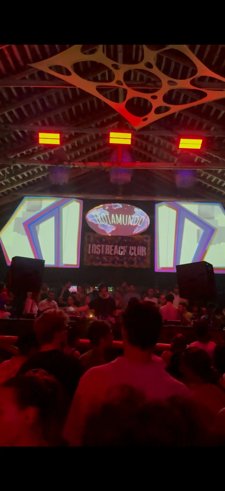
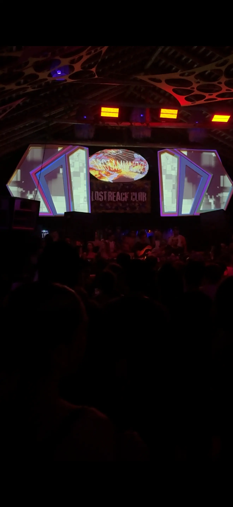
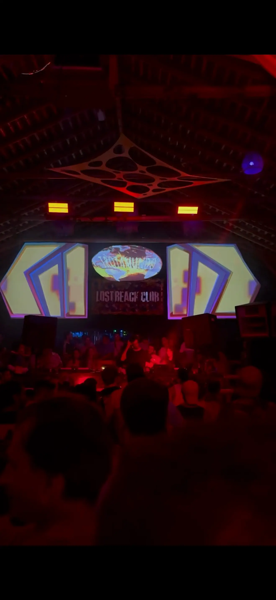
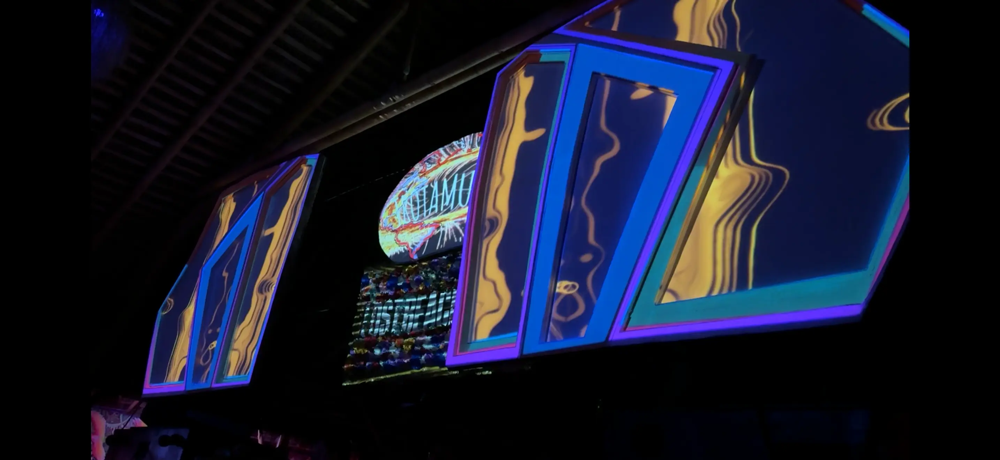
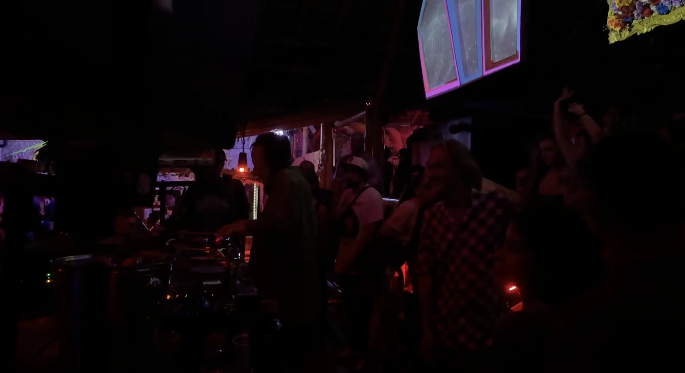
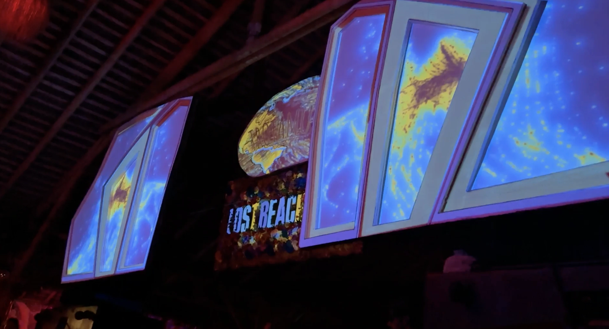
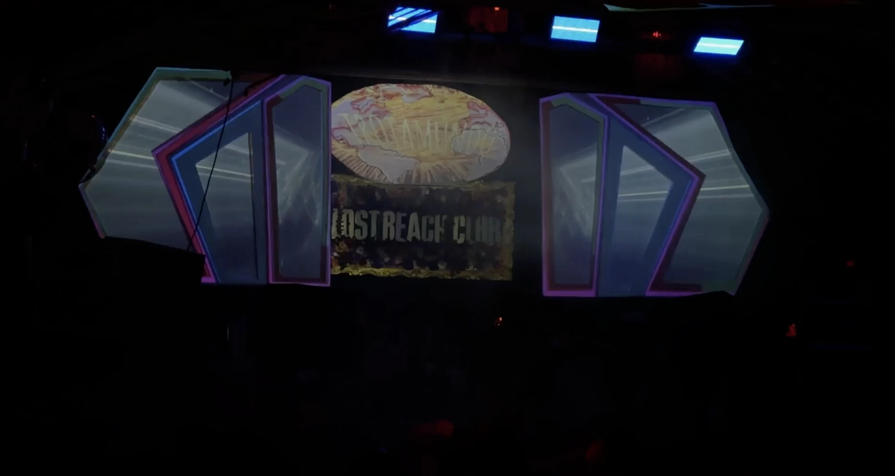

A six-hour generative visual performance unfolding alongside Rhadoo's extended set at Trotamundo Festival.



Over the course of the set, the visual language transitioned gradually, maintaining a delicate balance between repetition and transformation.

Micro-changes accumulated into larger movements, mirroring the hypnotic and minimal nature of the sound.
The following day, a seven-hour visual continuum accompanying a back-to-back set by Nicolas Lutz, Binh, and Masda.

Particle systems became the core language, forming drifting constellations, dense clusters, and unstable structures that kept reshaping themselves.

The direction moved into more cosmic and psychedelic territory - less grounded, more expansive.
